计算机图形学作业
第六章作业
6-1 请使用OpenGL、GLU和GLUT编写一个显示线框立方体的程序。其中立方体的半径为1.5单位，并首先绕(0, 0, 0)~(1, 1, 0)旋转30度，然后远移6.5单位；观察体规定为：视场角=30度，宽高比=1，近=1，远=100；程序窗口的大小为(200, 200)，标题为“线框立方体”。
#include <gl/glut.h> void init() { glutInitDisplayMode(GLUT_SINGLE|GLUT_RGBA); glutInitWindowSize(200,200); glutCreateWindow("线框立方体"); } void Paint() { glClear(GL_COLOR_BUFFER_BIT); glLoadIdentity(); gluPerspective(30, 1, 1, 100); glTranslated(0, 0, -6.5); glRotated(30, 1, 1, 0); glutWireCube(1.5); glFlush(); } int main(int argc, char *argv[]) { glutInit(&argc, argv); init(); glutDisplayFunc(Paint); glutMainLoop(); }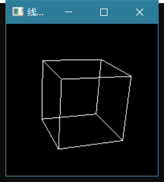
6-2 请使用OpenGL和GLUT编写一个显示线框球体的简单图形程序。其中球体的半径为0.8，经线数为24，纬线数为12，并绕 x 轴旋转30度，程序窗口的大小为(200, 200)，标题为“线框球”。
#include <gl/glut.h> void init(){ glutInitDisplayMode(GLUT_SINGLE|GLUT_RGBA); glutInitWindowSize(200,200); glutCreateWindow("线框球"); } void Paint(){ glClear(GL_COLOR_BUFFER_BIT); glLoadIdentity(); glRotated(30, 1, 0, 0); glutWireSphere(0.8,24,12); glFlush(); } int main(int argc, char *argv[]){ glutInit(&argc, argv); init(); glutDisplayFunc(Paint); glutMainLoop(); }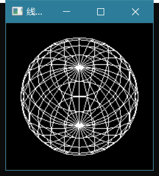
6-3 请使用OpenGL和GLUT编写一个显示线框椭球体的简单图形程序。其中椭球体的两极方向为上下方向，左右方向的半径为0.98，上下方向的半径为0.49，前后方向的半径为0.6，经线数为48，纬线数为24，使用正投影，裁剪窗口为(-1,-0.5)~(1, 0.5)，程序窗口的大小为(400, 200)，标题为“线框椭球”。
#include <gl/glut.h> void init() { glutInitDisplayMode(GLUT_SINGLE|GLUT_RGBA); glutInitWindowSize(400,200); glutCreateWindow("线框椭球"); } void Paint() { glClear(GL_COLOR_BUFFER_BIT); glLoadIdentity(); gluOrtho2D(-1, 1, -0.5, 0.5); glScaled(9.8,4.9,6); glutWireSphere(0.1,48,25); glFlush(); } int main(int argc, char *argv[]) { glutInit(&argc, argv); init(); glutDisplayFunc(Paint); glutMainLoop(); }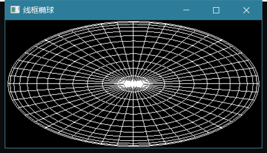
6-4 请使用OpenGL、GLU和GLUT编写一个三维犹他茶壶程序。其中茶壶的半径为1单位，并远移6.5单位；观察体规定为：视场角=30度，宽高比=1，近=1，远=100；程序窗口的大小为(200, 200)，标题为“旋转的尤他茶壶”。茶壶绕z轴不断旋转，旋转的时间间隔为25毫秒，角度间隔为2度。注意旋转角度必须限定在0～360度以内。
#include <gl/glut.h> int angle = 0; void init(){ glutInitDisplayMode(GLUT_SINGLE|GLUT_RGBA); glutInitWindowSize(200,200); glutCreateWindow("旋转的尤他茶壶"); } void Paint(){ glClear(GL_COLOR_BUFFER_BIT); glLoadIdentity(); gluPerspective(30, 1, 1, 100);//观察体规定 glTranslatef(0, 0, -6.5); //远移6.5单位 glRotated(angle, 0, 0, 1);//绕z轴 glutSolidTeapot(1);//半径为1 glFlush(); } void timer(int millis){ angle = (angle + 2) % 360; //角度间隔2度 glutPostRedisplay(); glutTimerFunc(millis, timer, millis); } int main(int argc, char *argv[]){ glutInit(&argc, argv); init(); glutTimerFunc(25, timer, 25);//时间间隔25ms glutDisplayFunc(Paint); glutMainLoop(); }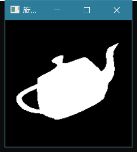
6-5 请使用OpenGL、GLU和GLUT编写一个简单的多视口演示程序。要求：在屏幕窗口左下角的1/4部分显示一个红色的填充正三角形；在屏幕窗口右上角的1/4部分显示一个绿色的填充正方形；三角形和正方形的左下角顶点坐标值均为(0,0)，右下角顶点坐标值均为(1, 0)；裁剪窗口均为(-0.1, -0.1)～(1.1, 1.1)；程序窗口的大小为(200, 200)，标题为“多视口演示”。
#include <gl/glut.h> int angle = 0; void init(){ glutInitDisplayMode(GLUT_SINGLE|GLUT_RGBA); glutInitWindowSize(200,200); glutCreateWindow("多视口演示"); } void Viewport(int x, int y, int w, int h){ glViewport(x, y, w, h); glLoadIdentity(); gluOrtho2D(-0.1, 1.1, -0.1, 1.1); } void Paint(){ int w = glutGet(GLUT_WINDOW_WIDTH) / 2; int h = glutGet(GLUT_WINDOW_HEIGHT) / 2; glClear(GL_COLOR_BUFFER_BIT); Viewport(0, 0, w, h); glColor3f(1, 0, 0); glBegin(GL_TRIANGLES); glVertex2d(0, 0); glVertex2d(1, 0); glVertex2d(0.5, 0.8660); glEnd(); Viewport(w, h, w, h); glColor3f(0, 1, 0); glRectf(0,0,1,1); glFlush(); } int main(int argc, char *argv[]){ glutInit(&argc, argv); init(); glutDisplayFunc(Paint); glutMainLoop(); }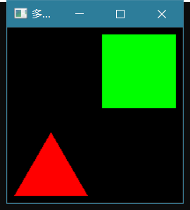
6-6 请使用OpenGL、GLU和GLUT编写一个多视口演示程序。要求：① 在屏幕窗口左下角的1/4部分显示一个红色的填充矩形，该矩形的一对对角顶点是(0, 0)和(1, 1)；② 在屏幕窗口右下角的1/4部分显示一个绿色的填充犹他茶壶，茶壶半径为0.4，并向右向上各移0.5；③ 在屏幕窗口上部居中的1/4部分显示一个蓝色的填充正三角形，该正三角形的左下角顶点是(0, 0)，右下角顶点是(1, 0)；④ 裁剪窗口均为(-0.1, -0.1)～(1.1, 1.1)，程序窗口的大小为(200, 200)，背景为黑色，标题为“多视口演示”。
#include <gl/glut.h> void init(){ glutInitDisplayMode(GLUT_SINGLE|GLUT_RGBA); glutInitWindowSize(200,200); glutCreateWindow("多视口演示"); } void Viewport(int x, int y, int w, int h){ glViewport(x, y, w, h); glLoadIdentity(); gluOrtho2D(-0.1, 1.1, -0.1, 1.1); } void Paint(){ int w = glutGet(GLUT_WINDOW_WIDTH) / 2; int h = glutGet(GLUT_WINDOW_HEIGHT) / 2; glClear(GL_COLOR_BUFFER_BIT); Viewport(0, 0, w, h);//左下角 glColor3f(1, 0, 0); glRectf(0,0,1,1); Viewport(w, 0, w, h);//右下角 glColor3f(0, 1, 0); glTranslated(0.5,0.5,0); glutSolidTeapot(0.4); Viewport(w/2, h, w, h);//上中部 glColor3f(0, 0, 1); glBegin(GL_TRIANGLES); glVertex2d(0, 0); glVertex2d(1, 0); glVertex2d(0.5, 0.8660); glEnd(); glFlush(); } int main(int argc, char *argv[]){ glutInit(&argc, argv); init(); glutDisplayFunc(Paint); glutMainLoop(); }
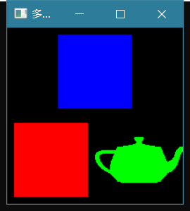
第三章作业
请写出OpenGL中指定点的大小和线宽的函数，要求写出完整的函数原型。
void glPointSize(GLfloat size) void glLineWidth(GLfloat width)请写出OpenGL中启用点、线、面反走样的函数调用。
启动点反走样:glEnable(GL_POINT_SMOOTH) 启动线段反走样:glEnable(GL_LINE_SMOOTH) 启动多边形的反走样:glEnable(GL_POLYGON_SMOOTH)请使用OpenGL和GLUT编写一个简单的图形程序，用于显示一个填充的白色正方形。其中正方形的左下角顶点是(-0.8, -0.8)，右下角顶点是(0.8, -0.8)，程序窗口的大小为(200, 200)，标题为“白色正方形”。
#include <GL/glut.h> void Paint() // 对象的描述 { glClear(GL_COLOR_BUFFER_BIT); // 清除颜色缓冲区 glRectf(-0.8,-0.8,0.8,0.8); // 定义矩形：正方形是特殊的矩形 glFlush(); } int main(int argc, char *argv[]) { glutInit(&argc, argv); // 初始化GLUT, 记录main()函数的参数 glutInitDisplayMode(GLUT_SINGLE | GLUT_RGBA);// 设置程序窗口的显示模式(单缓存, RGBA颜色模式, 默认值) glutInitWindowSize(200, 200); // 设置程序窗口在屏幕上的大小 glutCreateWindow("白色正方形"); // 设置窗口的标题 glutDisplayFunc(Paint); // 指定场景绘制循环函数, 必须 glutMainLoop(); // 开始循环执行OpenGL命令 }运行结果： 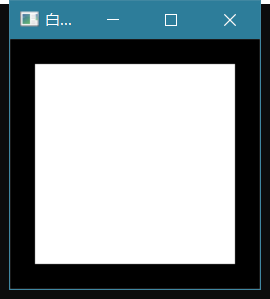
请使用OpenGL和GLUT编写一个简单的图形程序，用于显示一个填充的红色正三角形。其中正三角形的左下角顶点是(-0.5, 0)，右下角顶点是(0.5, 0)，程序窗口大小为(200, 200)，标题为“红色正三角形”。
#include <GL/glut.h> void Paint() // 对象的描述 { glClear(GL_COLOR_BUFFER_BIT); // 清除颜色缓冲区 glColor3f(1,0,0);// 定义红色 glBegin(GL_TRIANGLES); // 开始定义三角形 { glVertex2f(-0.5, 0); // 指定二维顶点坐标 glVertex2f(0.5, 0); glVertex2f(0, 0.9); } glEnd(); // 结束三角形的定义 glFlush(); // 强制OpenGL命令序列在有限的时间内完成执行 } int main(int argc, char *argv[]) { glutInit(&argc, argv); // 初始化GLUT, 记录main()函数的参数 glutInitDisplayMode(GLUT_SINGLE | GLUT_RGBA);// 设置程序窗口的显示模式(单缓存, RGBA颜色模式, 默认值) glutInitWindowPosition(100, 100); // 设置程序窗口在屏幕上的位置 glutInitWindowSize(200, 200); // 设置程序窗口在屏幕上的大小 glutCreateWindow("红色正三角形"); // 设置窗口的标题 glutDisplayFunc(Paint); // 指定场景绘制循环函数, 必须 glutMainLoop(); // 开始循环执行OpenGL命令 }运行结果：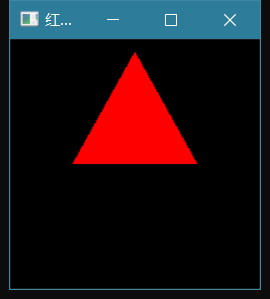
请使用OpenGL和GLUT编写一个简单的图形程序，用于显示一个填充的蓝色四边形。其中四边形的4个顶点分别是(-0.8, -0.8)、(0.5, -0.8)、(0.8, 0.8)和(-0.5,0.8)，程序窗口的大小为(200, 200)，背景为白色，标题为“蓝色四边形”。
#include <GL/glut.h> void Paint() // 对象的描述 { glClearColor(1, 1, 1, 1);//定义背景颜色为白色 glClear(GL_COLOR_BUFFER_BIT); // 清除颜色缓冲区 glColor3f(0,0,1);// 定义蓝色 glBegin(GL_QUADS);//绘制四边形 { glVertex2f(-0.8,-0.8);//定义顶点 glVertex2f(0.5,-0.8); glVertex2f(0.8,0.8); glVertex2f(-0.5,0.8); } glEnd(); glFlush(); // 强制OpenGL命令序列在有限的时间内完成执行 } int main(int argc, char *argv[]) { glutInit(&argc, argv); // 初始化GLUT, 记录main()函数的参数 glutInitDisplayMode(GLUT_SINGLE | GLUT_RGBA);// 设置程序窗口的显示模式(单缓存, RGBA颜色模式, 默认值) glutInitWindowPosition(100, 100); // 设置程序窗口在屏幕上的位置 glutInitWindowSize(200, 200); // 设置程序窗口在屏幕上的大小 glutCreateWindow("蓝色四边形"); // 设置窗口的标题 glutDisplayFunc(Paint); // 指定场景绘制循环函数, 必须 glutMainLoop(); // 开始循环执行OpenGL命令 }运行结果：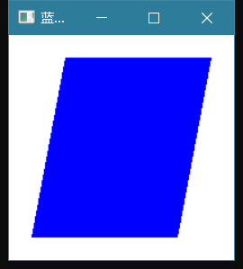
请使用OpenGL和GLUT编写一个简单的图形程序，用于演示点的反走样效果。要求使用线段(-0.6, -0.6)～(0.6, 0.6)上均匀分布的5个点（含端点），点的大小为10.5像素，程序窗口的大小为(200, 200)，标题为“点的反走样”。
#include <GL/glut.h> void Paint() { double x; glClear(GL_COLOR_BUFFER_BIT); glBegin(GL_POINTS); for(x = -0.6;x<=0.6;x+=0.3) glVertex2f(x,x); glEnd(); glFlush(); } int main(int argc,char *argv[]) { glutInit(&argc, argv); glutInitWindowSize(200,200); glutCreateWindow("点的反走样"); glutDisplayFunc(Paint); glPointSize(10.5); glEnable(GL_POINT_SMOOTH); glutMainLoop(); }运行结果：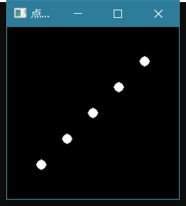
请使用OpenGL和GLUT编写一个简单的图形程序，用于演示线段的反走样效果。其中线段的端点为(-0.6, -0.3)和(0.6, 0.3)，线宽为4.5像素，程序窗口的大小为(200, 200)，标题为“线段的反走样”。
#include <GL/glut.h> void Paint() { double x; glClear(GL_COLOR_BUFFER_BIT); glBegin(GL_LINE_STRIP); { glVertex2f(-0.6,-0.3); glVertex2f(0.6,0.3); } glEnd(); glFlush(); } int main(int argc,char *argv[]) { glutInit(&argc, argv); glutInitWindowSize(200,200); glutCreateWindow("线段的反走样"); glutDisplayFunc(Paint); glLineWidth(4.5); glEnable(GL_LINE_STIPPLE); glutMainLoop(); }运行结果：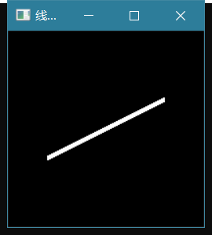
请使用OpenGL、GLU和GLUT编写一个简单的多视口演示程序。要求：
① 在屏幕窗口左侧的1/2部分显示一个红色的填充矩形，该矩形的一对对角顶点是
(-0.8, -0.8)和(0.8, 0.8)；
② 在屏幕窗口右侧的1/2部分显示一个蓝色的填充犹他茶壶，茶壶半径为0.6；
③ 程序窗口的大小为(400, 200)，背景为黑色，标题为“多视口演示”。#include <gl/glut.h> Viewport(int x, int y, int w, int h) { glViewport(x, y, w, h); // 定义视口 glLoadIdentity(); // 消除其他视口的影响, 函数介绍见后续章节 } void Paint() { int w = glutGet(GLUT_WINDOW_WIDTH)/2 ; // 计算视区宽度 int h = glutGet(GLUT_WINDOW_HEIGHT); // 计算视区高度 glClear(GL_COLOR_BUFFER_BIT); // 清除颜色缓存 Viewport(0, 0, w, h); // 左方视口 glColor3f(1, 0, 0); // 设置当前颜色,红色 glRectf(-0.8, -0.8, 0.8, 0.8); // 定义正方形 Viewport(w, 0, w, h); // 右方视口 glColor3f(0, 0, 1); // 设置当前颜色, 蓝色 glutSolidTeapot(0.6); // 定义犹他茶壶 glFlush(); // 强制OpenGL命令序列在有限的时间内完成执行 } int main(int argc, char *argv[]) { glutInit(&argc, argv); // 初始化GLUT, 记录main()函数的参数 glutInitWindowSize(400,200); glutCreateWindow("多窗口演示"); // 指定窗口标题 glutDisplayFunc(Paint); // 指定场景绘制函数 glutMainLoop(); // 开始执行 }运行结果：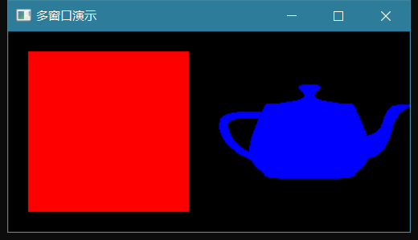
请使用OpenGL、GLU和GLUT编写一个多视口演示程序。要求：
① 在屏幕窗口左下角的1/4部分显示一个红色的填充矩形，该矩形的一对对角顶点是(-0.8,-0.8)和(0.8, 0.8)；
② 在屏幕窗口右下角的1/4部分显示一个绿色的填充犹他茶壶，
茶壶半径为0.6；
③ 在屏幕窗口上部居中的1/4部分显示一个蓝色的填充三角形，该
三角形的顶点分别是(-0.8, -0.8)、(0.8, -0.8)和(0, 0.8)；④ 程序窗口的大小为(200,200)，背景为黑色，标题为“多视口演示”。#include <gl/glut.h> Viewport(int x, int y, int w, int h) { glViewport(x, y, w, h); // 定义视口 glLoadIdentity(); // 消除其他视口的影响, 函数介绍见后续章节 } void Paint() { int w = glutGet(GLUT_WINDOW_WIDTH) / 2; // 计算视区宽度 int h = glutGet(GLUT_WINDOW_HEIGHT) / 2; // 计算视区高度 glClear(GL_COLOR_BUFFER_BIT); // 清除颜色缓存 Viewport(0, 0, w, h); // 左方视口 glColor3f(1, 0, 0); // 设置当前颜色,红色 glRectf(-0.8, -0.8, 0.8, 0.8); // 定义正方形 Viewport(w, 0, w, h); // 右方视口 glColor3f(0, 1, 0); // 设置当前颜色, 绿色 glutSolidTeapot(0.6); // 定义犹他茶壶 Viewport(w/2, h, w, h); // 上方视口 glColor3f(0, 0, 1); // 设置当前颜色, 蓝色 glBegin(GL_TRIANGLES); // 定义填充三角形 { glVertex2f(-0.8, -0.8); // 指定二维顶点坐标 glVertex2f(0.8, -0.8); glVertex2f(0, 0.8); } glEnd(); glFlush(); // 强制OpenGL命令序列在有限的时间内完成执行 } int main(int argc, char *argv[]) { glutInit(&argc, argv); // 初始化GLUT, 记录main()函数的参数 glutInitWindowSize(200,200); glutCreateWindow("多窗口演示"); // 指定窗口标题 glutDisplayFunc(Paint); // 指定场景绘制函数 glutMainLoop(); // 开始执行 }
运行结果：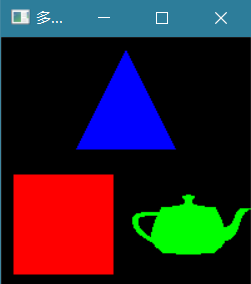
笔记
构图
快捷构图
矩形
- void glRectd(GLdouble x1, GLdouble y1, GLdouble x2, GLdouble y2);
- void glRectf(GLfloat x1, GLfloat y1, GLfloat x2, GLfloat y2);
- void glRecti(GLint x1, GLint y1, GLint x2, GLint y2);
- void glRects(GLshort x1, GLshort y1, GLshort x2, GLshort y2);
- void glRectdv(const GLdouble *v1, const GLdouble *v2);
- void glRectfv(const GLfloat *v1, const GLfloat *v2);
- void glRectiv(const GLint *v1, const GLint *v2);
- void glRectsv(const GLshort *v1, const GLshort *v2);
立方体
- void glutSolidCube(GLdouble size);绘制实心立方体
- void glutWireCube(GLdouble size);绘制网格线立方体
四面体
- void glutSolidTetrahedron(void);绘制实心四面体
- void glutWireTetrahedron(void);绘制网格线四面体
八面体
- void glutSolidOctahedron(void);绘制实心八面体
- void glutWireOctahedron(void);绘制网格线八面体
十二面体
- void glutSolidDodecahedron(void);绘制实心十二面体
- void glutWireDodecahedron(void);绘制网格线十二面体
二十面体
- void glutSolidIcosahedron(void);绘制实心二十面体
- void glutWireIcosahedron(void);绘制网格线二十面体
球面
- void glutSolidSphere(GLdouble radius, int slices, int stacks);绘制实心球面
- void glutWireSphere(GLdouble radius, int slices, int stacks);绘制网格线球面。
圆锥
- void glutWireCone(GLdouble base, GLdouble height, GLint slices, GLintstacks);绘制一个实心圆锥
- void glutSolidCone(GLdouble base, GLdouble height, GLint slices, GLintstacks);绘制一个网格线圆锥
圆环
- void glutSolidTorus(GLdouble innerRadius, GLdouble outerRadius, GLintsides, GLint rings);绘制一个实心圆环
- void glutWireTorus(GLdouble innerRadius, GLdouble outerRadius, GLintsides, GLint rings);绘制一个网格线圆环
犹他茶壶
- void glutSolidTeapot(GLdouble size);绘制实心茶壶
- void glutWireTeapot(GLdouble size);绘制网格线茶壶
自定义构图
- void glBegin(GLenum mode);
- GL_POINTS：把每一个顶点作为一个独立的点。
- GL_LINES：把每一对顶点作为一条独立的线段。
- GL_LINE_STRIP：顶点依次相连成一组线段。
- GL_LINE_LOOP：顶点依次相连成一组线段，并连接末顶点与首顶点。
- GL_TRIANGLES：把每三个顶点作为一个独立的三角形。
- GL_TRIANGLE_STRIP：三角形带，顶点n、n+1和n+2定义第n个三角形。
- GL_TRIANGLE_FAN：三角形扇形，顶点1、n+1和n+2定义第n个三角形。
- GL_QUADS：把每四个顶点作为一个独立四边形。
- GL_QUAD_STRIP：四边形带，顶点2n-1、2n、2n+2和2n+1定义第n个四边形。可能形成有交叉的四边形，不好把握。
- GL_POLYGON：所有顶点作为一个简单多边形。最好不要定义凹多边形，多边形在
处理时会分解成三角形扇形，凹多边形可能得不到预期效果。